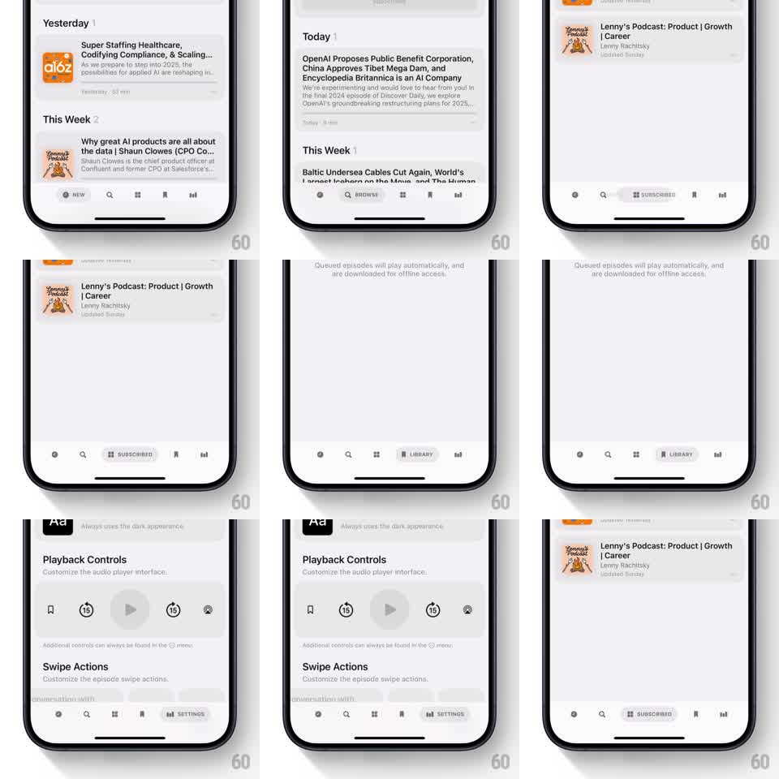

Media
Frame-by-frame

Rebuild this interaction 1:1: Neuecast's tab bar - the active tab morphs from a bare icon into a rounded pill carrying the icon and its label, and the pill slides to whichever tab is selected.

Rebuild this interaction 1:1: Neuecast's tab bar - the active tab morphs from a bare icon into a rounded pill carrying the icon and its label, and the pill slides to whichever tab is selected. ## Integration Integration: stack-agnostic spec - springs given as stiffness/damping, timed motions as duration + curve; map every value to your framework and animation library of choice. ## Scene Podcast app with a floating bottom tab bar: five items (New, Search, Browse, Library, Settings). The active item is a tinted pill with icon plus text label; inactive items are bare icons. ## Motion spec Pattern: sliding active-pill morph, ~500ms. - On selection, the pill detaches from the old tab and slides to the new one (spring stiffness 300 damping 24), stretching slightly along its travel axis (scaleX to 1.2 mid-flight) and settling back to shape. - As the pill arrives, the destination icon slides into the pill's left slot and its label reveals beside it (width expand + fade, 250ms, ease-out). - The old tab's label collapses back to a bare icon on the same beat (200ms, ease-in). - The page content crossfades with the pill's arrival; swiping between pages drags the pill along proportionally, tracking the gesture 1:1. ## Calibration - One pill, always - it travels between tabs rather than each tab growing its own. - The stretch is proportional to travel speed; a slow tap barely deforms it. ## Reduced motion Pill crossfades between positions; no stretch. ## Don't miss - The label text is capitalized and tinted to match the pill - inactive icons are plain. - The bar itself floats above the content with a shadow; the pill slides inside it, not over the page.